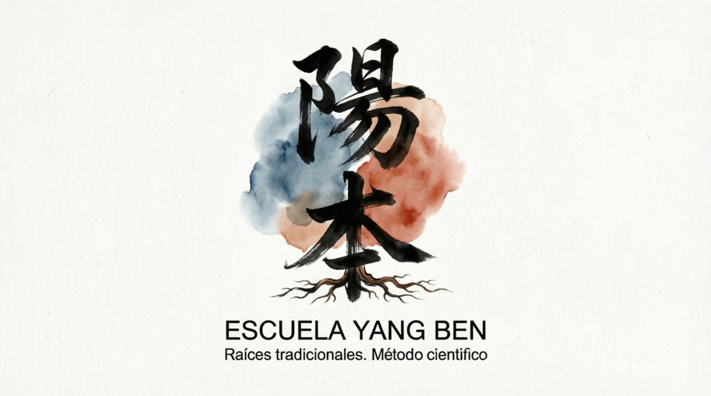

Escuela de Tai Chi Yang Ben
Escuela de Tai Chi Yang BenNuestra Historia
En La Plata, Buenos Aires, Fernando Martín fundó la escuela Yang Ben para honrar a sus maestros y recuperar la sabiduría ancestral del arte marcial y la medicina tradicional china. Mientras otras academias venden misticismo, esoterismo y secretos inalcanzables, Yang Ben propone un camino claro, honesto y profundamente práctico. Aquí se trabaja al aire libre, alejados del discurso "new age", para devolverle al Tai Chi Chuan y al Qigong su esencia real: movimiento consciente, disciplina, equilibrio y conexión con el cuerpo. El enfoque de la escuela es puramente realista y demostrable. Su principio fundamental es que la Medicina Tradicional China, cuando se enseña desde un linaje puro, se integra con la medicina occidental y se apoya en una base científica sólida. De este modo, los beneficios no se prometen como una idea vaga, sino que se construyen a partir de la práctica, la observación y la constancia. En este espacio de entrenamiento reina el respeto, la confianza y la verdad. Yang Ben es un regreso a la esencia del arte: un homenaje a la tradición que no necesita disfraces ni humo, sino rigor, claridad y una relación profunda y consciente con el cuerpo humano.

La esencia de Yang Ben está forjada por la influencia de Sifu Damian, un maestro definido por su rigor, su enfoque anatómico y su profunda comprensión de la biomecánica humana. Su inquebrantable compromiso con el linaje que puede rastrearse hasta el fundador El gran maestro ku yu chuen y su absoluta honestidad intelectual marcaron el camino, demostrando que el cuerpo se rige por leyes físicas y que el verdadero arte radica en "cultivar la raíz". Fernando Martín fundó la escuela impulsado por esta herencia, con el propósito de probar que las artes marciales tradicionales, lejos del esoterismo, son un instrumento práctico y riguroso para mejorar al ser humano como un todo.